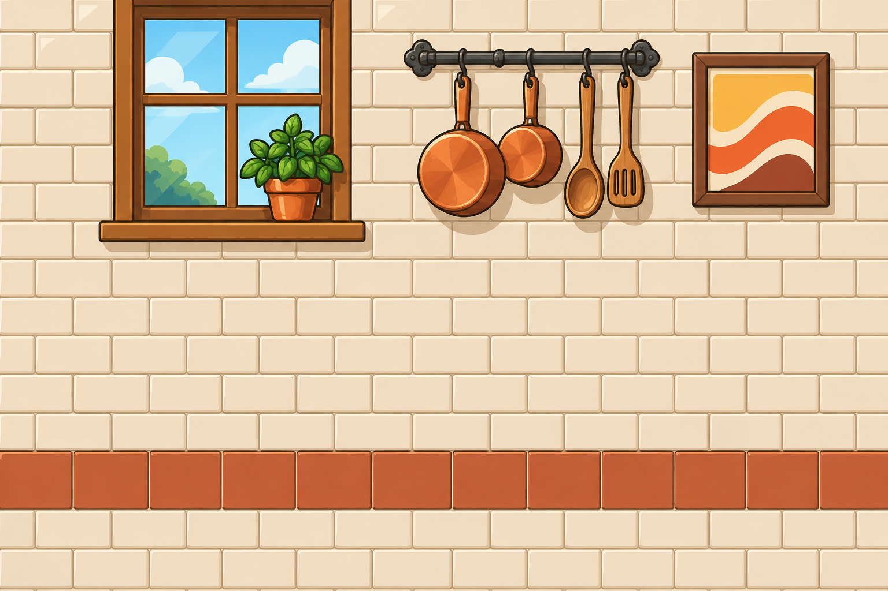
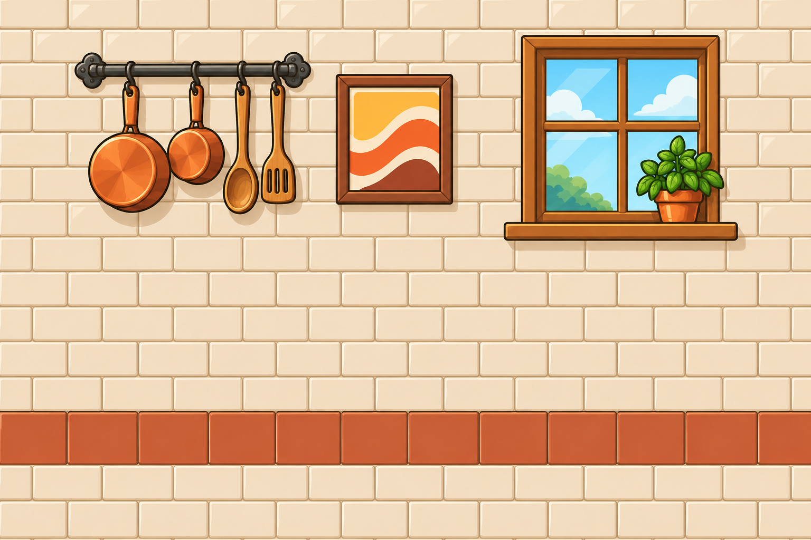
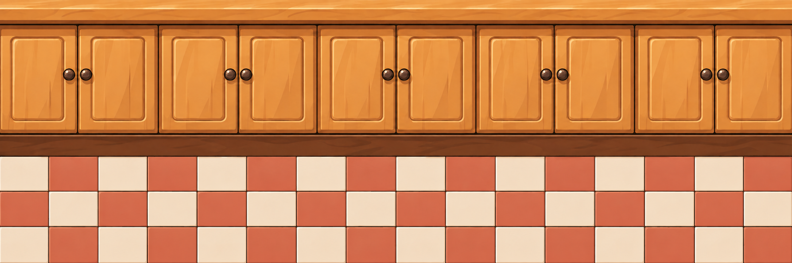
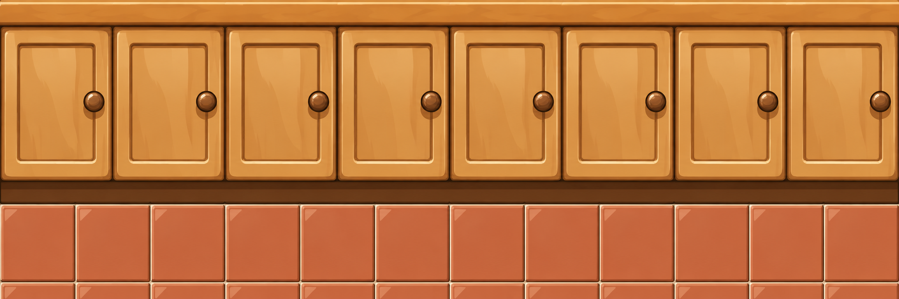
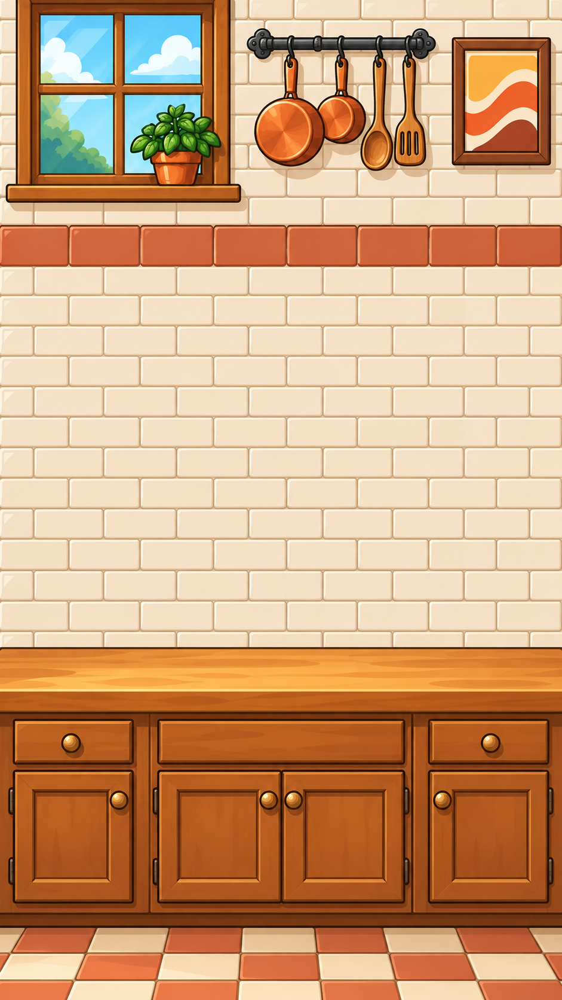
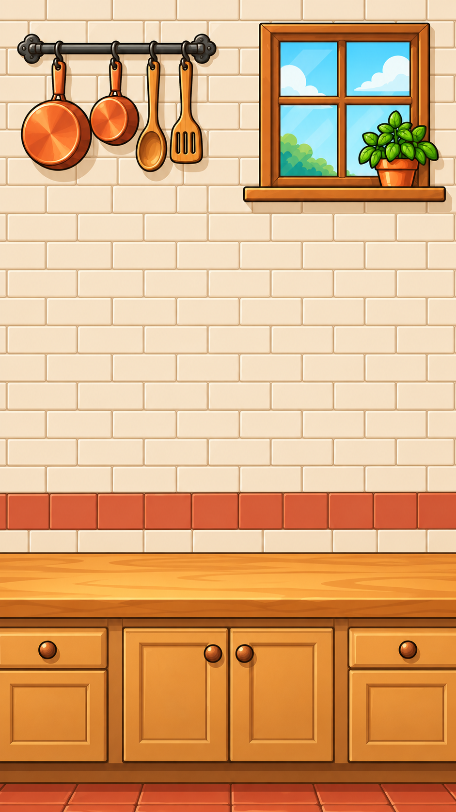

Option A


1536 × 1024 · Download PNG
Background options · two versions of each asset · original PNGs

1536 × 1024 · Download PNG

1536 × 1024 · Download PNG

2172 × 724 · Download PNG

2172 × 724 · Download PNG

941 × 1672 · Download PNG

941 × 1672 · Download PNG
These strips repeat each original image without edge correction. Look for discontinuities at joins before integration.
Native resolution is lower than the requested target; files have not been upscaled. Seam blending may be needed. Generation notes and full prompts